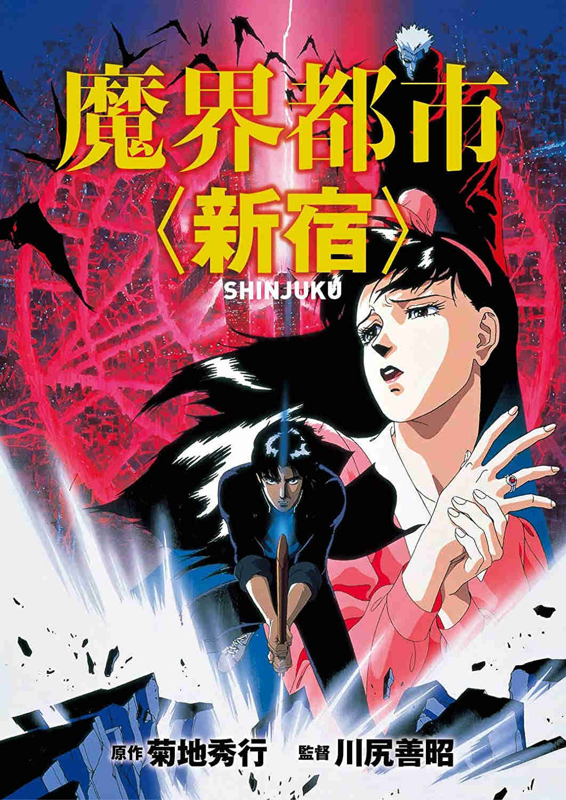

| Demon City Shinjuku | |
|---|---|
| Trailer | Original Poster |
|  | |
|
- Plot : A young swordsman and the daughter of a political Messiah enter
a ravaged Shinjuku, Tokyo, to stop the man who killed the former's father from opening a portal to a world of demons. - Japenese title : 魔界都市 (新宿) - Genre : Urban horror / Fantasy - Directed by : Yoshiaki Kawajiri - Music by : Motokazu Shinoda - Running time : 1h11m - Production : Madhouse animation studio - Release date : 25 October 1988 |
|